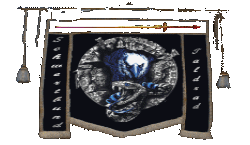
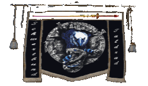

| Übersicht,
Anschläge und Stammtisch (RPG) |
|
Kapitulation (12  ) )
|
Felaria Mendalon
.GIF) |
* kniet nieder als der minotaurentupp durch aerlinn zieht *
Pfalzgräfin Felaria Mendalon,
Vorsteherin von Winternacht
Zur 4. Stunde am 85.Blumenmond im Jahre 432 |
28.02.08 21:07
|
|
| Pyrgus (RIP) |
28.02.08 21:08 Erkenntnis General Gration zerfetzt die Strohpuppe Falsters und wütet in der Attrappe Aerlinns
Farawyn,
Jäger der Nation
Zur 4. Stunde am 85.Blumenmond im Jahre 432 |
28.02.08 21:10
|
|
| Jean Pierre Duval (RIP) |
28.02.08 21:09 Falle Grations Truppen werden von Armeen umzingelt
Jean Pierre Duval,
Priester im Dienste des einzig wahren Glaubens an Urvan
Zur 4. Stunde am 85.Blumenmond im Jahre 432 |
28.02.08 21:11
|
|
| Raziel (RIP) |
hut ab König kein schlechter Schachzug
Raziel,
Kardinal im Dienste des einzig wahren Glaubens an Urvan
Zur 4. Stunde am 85.Blumenmond im Jahre 432 |
28.02.08 21:12
|
|
| Graywolf of Nas`Quellan (RIP) |
na mal sehen, was der nun in seiner Wut wieder anstellt....
Markgraf Graywolf of Nas`Quellan,
Vorsteher von Heredia
Zur 4. Stunde am 85.Blumenmond im Jahre 432 |
28.02.08 21:19
|
|
| Levthan Araxes (RIP) |
*Nimmt sein Schwert auf und hinter ihm strümen seine Getreuen aus ihren Hinterhalten*
Zu den Waffen Krieger des HAINES! Kämpft und lasst dieses TIER nicht entkommen!
Fürst Levthan Araxes,
Vorsteher von Anudôra,
Anführer der glorreichen Nation "CHROME"
Zur 4. Stunde am 85.Blumenmond im Jahre 432 |
28.02.08 21:20
|
|
| Dracon Darknight (RIP) |
Wie ich sagte...
Troj.. Ähm Aerlinscher Falster.
Dracon Darknight,
Kardinal im Dienste des einzig wahren Glaubens an Urvan,
Anführer der glorreichen Nation "Orden der Drachenritter",
Gefährte der Eisdrachin Aylia,
Großmeister des Ordens der Drachenritter
Zur 5. Stunde am 85.Blumenmond im Jahre 432 |
28.02.08 21:24
|
|
Luzi ni Mur
  |
*sich kratzt*
Nicht übel!
*überlegt kurz* Sagt mal, ihr wollt diesen Gration nicht zufällig gegen unsere Lucky Lois eintauschen? Wär echt nen feiner Schachzug *meint*
Bringt bestimmt auch Glück! Jawoll!
Freifrau Luzi ni Mur,
Anführerin der glorreichen Nation "Breariach",
Valendors wandelnde Flohherberge
Zur 6. Stunde am 85.Blumenmond im Jahre 432 |
28.02.08 21:36
|
|
| Ibn de Witt (RIP) |
Ich gratuliere zu diesem grossartigen, aussergewoehnlichen, unglaublich fintenreichen Plan und gratuliere ebenfalls zu der nicht minder grossartigen, sicher hoechst effizienten und aeusserst erfolgreichen Umsetzung. Nur die besten Strategen des Grosshains konnten sich solch einen durchtriebenen, teuflischen, nicht zu durchschauenden und mit so einfachen Mitteln zu realisierenden Plan ausdenken.
Meinen tief empfundenen Respekt ...
Graf Ibn de Witt,
Vorsteher von Esturia Draconis
Zur 7. Stunde am 85.Blumenmond im Jahre 432 |
28.02.08 21:53
|
|
| Pierre Malheur (RIP) |
herrje...da sieht man wieder das kühe eigentlich nur zu einem gut sind....fleisch und milch geben...
*beisst in seine semmel und zieht von dannen*
Nathran Geofe
Zur 7. Stunde am 85.Blumenmond im Jahre 432 |
28.02.08 21:55
|
|
Baldur McMulenberc
  |
Glückwunsch an den Hain. Will die Leistung nicht schmälern, aber mal ehrlich: Die Kühe sind doch echt selten dämlich, wenn sie auf solch eine offensichtliche Finte hereinfallen?! Oder haben sie in ihrer Arroganz derart abgehoben, dass sie einfach nicht anders können?
Wie auch immer, wer sich so übers Ohr hauen lässt, ist sicherlich nicht fähig, eine Stadt, geschweige denn ein ganzes Reich zu regieren.
Tod den Kühen!
Markgraf Baldur Tevylian von Fidelitas,
Vorsteher von Caer Valdeargh,
Anführer der glorreichen Nation "Briganden des Westens",
Chaotischer Rebell
Zur 10. Stunde am 85.Blumenmond im Jahre 432 |
28.02.08 22:33
|
|
| Falster von Distelflamme (RIP) |
Falster steht auf der Mauer rund um die Atrappe und blickt zufrieden in die Strassen.
Die Atrappe ist einem Stadteil Aerlinns rund um das Prächtige Süd Tor herum nachempfunden und wirkt täuschend echt, wenn auch die Häuser nur bessere Fasaden sind.
Das gesammte Areal ist weitläufig und bietet hunderttausenden Menschen Raum um sich in den Strassen und Gassen zu verstreuen.
Alles was gerade noch prächtig geschmückt war und durch das Lichtermehr des Feuerwerks in tausend Farben gehüllt war, ist nun zerfetzt durch die Wut der gefangenen Minotauren.
Nur wenige sind jedoch zu sehen da sich das Gros der Brut tief in die Gassen der Atrappe zurück gezogen hat.
Doch die Baumester die in nur wenigen Tagen unglaubliches erdacht haben, und denen zehntausende Arbeiter und zahllose Magier fleissige und ausführende Hände waren, sahen dies vorraus und waren sich dieser Situation bewusst.
Ein Entkommen muss aussichtslos sein war das Ziel.
Soldaten! Bereit machen zum Angriff!
So viele sind gestorben!
Freunde, Väter und Brüder!
Die Zeit der Rache ist gekommen!
Die Stunde des Feuers!
Tod den Minotauren!
TOD!
Mit einer Geste seiner rechten Hand gibt König Falster Kommando an die ebenfalls auf dem Wehrgang wartenden Magier und Schützen das Feuer zu eröffnen.
Surren der Pfeile, grollen des schweren Kriegsgerätes, ein roter Himmel gefärbt durch die Feuerregen der Kriegsmagier.
Der Hagel des Todes hat begonnen und rasch fangen die Gebäude der riesigen Atrappe Feuer.
Den Minotauren bleibt keine Wahl ihre Zuflucht aufzugeben und die Hauptstrassen aufzusuchen wo sie noch leichter Beute des grimmen Heeres werden.
Rauch überall und ein loderndes Feuer wie in den Höllen der Absieben, die Atrappe ist zu einem Ort des Schreckens geworden aus dem die Schreie der Wut und des Schmerzes der Minotauren laut nach aussen dröhnen.
Für einen Moment blitzt auf dem Kopfe eines grossen Minotauren etwas golden auf, jedoch ist der Hühne kurz darauf in der Masse verschwunden.
War es Gration?
Setzt den Angriff fort bis kein Stein und kein Balken mehr auf dem anderen steht und die Atrappe zu einem Friedhof aus Feuer und Asche geworden ist!
König Falster wendet sich ab und zieht sich zurück in seinen Palast
König Falster von Distelflamme,
Vorsteher von Aerlinn,
Anführer der glorreichen Nation "Laoch d´Orchadas",
Si vis pacem para bellum,
Guth an Curadh,
Ehemann der reizenden Tira Lu von Distelflamme
Zur 10. Stunde am 85.Blumenmond im Jahre 432 |
28.02.08 22:38
|
|
| Georgina von Dragon (RIP) |
Famose Tat, meinen Glückwunsch
Freiheit für die Scherbe!!
Freifrau Tarabea Tarias,
Vorsteherin von Castelo de Már,
Stern von Cair
Zur 11. Stunde am 85.Blumenmond im Jahre 432 |
28.02.08 22:47
|
|
Tilion
  |
Nicht schlecht!
Markgraf Tilion,
Vorsteher von Avarannon
Zur 11. Stunde am 85.Blumenmond im Jahre 432 |
28.02.08 22:50
|
|
| Dorothea von Georgia (RIP) |
*verwundert, aber mit erfreut den Schachtzug von falster verfolgt*
Nich schlecht. Freiheit für die Scherbenbewohner.
Freifrau Dorothea von Georgia,
Vorsteherin von Asgards Georgia,
Ehefrau des ehrenwerten Georg von Georgia
Zur 11. Stunde am 85.Blumenmond im Jahre 432 |
28.02.08 22:53
|
|
| Agrippa de Arsakes (RIP) |
*Schmunzelt*
Markgräfin Agrippa Selachii,
Vorsteherin von Meresin,
Kardinälin im Dienste des einzig wahren Glaubens an Pheron,
Ehefrau des ehrenwerten Sam Selachii
Zur 11. Stunde am 85.Blumenmond im Jahre 432 |
28.02.08 22:53
|
|
| Jane van Delving (RIP) |
Freiheit für die Scherbe!
*nickt zuversichtlich und anerkennend*
Jane Doe,
Vorsteherin von Tuborg
Zur 12. Stunde am 85.Blumenmond im Jahre 432 |
28.02.08 23:11
|
|
| Beliandra Cascus (RIP) |
Meine Gratulation zu diesem ausgeklügelten Plan!
Lady Beliandra of Dark,
Vorsteherin von Akatharsia,
Hohepriesterin im Dienste des einzig wahren Glaubens an Urvan,
Legionärin Urvans,
Verlobte des ehrenwerten Valendor Cascus,
Zweitbeste Bardin des diesjährigen Bardenwettstreites
Zur 13. Stunde am 85.Blumenmond im Jahre 432 |
28.02.08 23:16
|
|
Laurana
  |
Gratulation!
Entweder es war vedammt viel Arbeit ne Atrappe einer 3-Mio-Stadt aufzubauen, oder der General hatte wohl Tomaten auf den Augen, als er eine Stadt aus Pappe betrat ^^
Jedenfalls Gratulation zu dieser gelungenen Finte!
Fürstin Laurana,
Vorsteherin von Burg Sternental,
Siegerin des ersten Cuchulain-Gedächtnis-Pokals
Zur 13. Stunde am 85.Blumenmond im Jahre 432 |
28.02.08 23:21
|
|
| Virgonz Shock (RIP) |
Respekt...
Während ich eure Kapitulation verdaute,
*und sowas nennt sich Großkönig von Urvan´s Gnaden,wie kann er nur den Namen des Herren so beschmutzen!*
meine Gedanken zu ordnen versuchte und ungeduldig der Dinge,die noch kommen würden,harrte...diese Meldungen,diese Wendung!
...für einen einfachen aber ebendrum effektiven Plan(bei Gration und seiner Armee von Größenwahnsinnigen genau diese Schwäche auszunutzen),hervorragend geplant und umgesetzt!
Virgonz Shock,
Kardinal im Dienste des einzig wahren Glaubens an Urvan
Zur 19. Stunde am 85.Blumenmond im Jahre 432 |
29.02.08 0:44
|
|
| Fáin Cortez (RIP) |
Dieser alte Magier zieht seinen Hut vor der gut durchdachten Aktion...
MfG.
Baron Fáin Cortez,
Vorsteher von Castilleja de la Cueva,
Hohepriester im Dienste des einzig wahren Glaubens an Wendaria,
Anführer der glorreichen Nation "Freibeuter",
Ehemann der reizenden Isabella Cortez,
El Capitan,
Teilnehmer des Schmiedewettbewerbes
Zur 20. Stunde am 85.Blumenmond im Jahre 432 |
29.02.08 0:59
|
|
| Redlook Dose (RIP) |
Das roch doch schon 100 Meter gegen den Wind nach Falle....aber naja er ist darauf reingefallen und die Falle erfüllt ihren Zweck. Gratulation!
Baron Redlook Dose,
Vorsteher von Far Far Away,
Anführer der glorreichen Nation "Rebellen Makis",
Nationswerber
Zur 18. Stunde am 86.Blumenmond im Jahre 432 |
29.02.08 6:07
|
|
| Jadrus von Mondstein (RIP) |
Ein wahrlich Gute Nachricht die auf einen Genialen Plan folgt. Mein voller Respekt
Freiherr Jadrus von Mondstein,
Vorsteher von Mondstein,
Anführer der glorreichen Nation "Mada Var",
Ehemann der reizenden Titania Greenleaf
Zur 23. Stunde am 86.Blumenmond im Jahre 432 |
29.02.08 7:12
|
|
| Vincent Aquila (RIP) |
Vincent Aquila und Cwlvyn ab Dhwron betreten den Balkon des Rathauses von Druidenforst und schauen auf die große Menschenmenge auf dem großen Marktplatz, der sich vor Ihnen erstreckt. Schon vor Stunden verkündeten die Ausrufer die Neuigkeiten aus dem Hain und spendeten der Bevölkerung neuen Mut. Vincent Aquila erhebt seine Stimme während Cwlvyn ab Dhwron schräg hinter ihm steht und konzentriert zu Boden schaut.
Templer! Freie Siedler von Thuatail! Freie Bürger der Hafeninsel!
Ihr habt die frohe Botschaft gehört. Der Hain hat dem Feinde einen entscheidenden Schlag versetzt.
Dies ist, seit dem Fall der Festung auf Cap Puccino, der erste Gegenschlag der freien Völker der Schwerbe gegen die feige Invasion der Minotauren. Diese frohe Botschaft kann man gar nicht oft genug hören!
28.02.08 20:30 Triumphmarsch Gration führt die Minotauren in seine neue Stadt
28.02.08 21:08 Erkenntnis General Gration zerfetzt die Strohpuppe Falsters und wütet in der Attrappe Aerlinns
28.02.08 21:09 Falle Grations Truppen werden von Armeen umzingelt
Dies gibt uns den Mut weiter zu kämpfen!
Dies gibt und den Ansporn es den Helden des Hain gleich zu tun!
Zu den Waffen Templer!
Zu den Waffen Freie Siedler von Thuatail!
Zu den Waffen Ihr freie Bürger der Hafeninsel!
Wir werden nicht ruhen, bis unsere Insel wieder befreit ist von unseren ehemaligen Unterdrückern!
Tod den Minotauren!
TOD!
Die Menge jubelt Vincent Aquila zu! Es ertöhnen viele Rufe zu Ehren des Königs und seines Gefolge. Viele streben zu den Rekrutierungsstellen der Templer, die schon seit Tagen auf den Marktplätzen der Templerstädte neue Soldaten für den Kampf rekrutieren. Cwlvyn ab Dhwron schau auf und entspannt sich. Die Anführer begeben sich zu den wartenden Truppen und marschieren in Richtung der Minotaurenfestung davon.
Fürst Vincent Aquila,
Vorsteher von Druidenforst,
Anführer der glorreichen Nation "Templer"
Zur 24. Stunde am 86.Blumenmond im Jahre 432 |
29.02.08 7:26
|
|
Imperius Taldrad
   |
Ich habe schon, als ich das erst mal hörte Falster hätte aufgegeben, gesagt es ist ne Falle. Alle um mich waren verwirrt, aber nicht ich.
Falster würde nie seinen Hain und seine Stadt aufgeben, eher würde er sterben.
Mir war nur nicht klar wie er es anstellen wollte.
Nun da es bekannt ist möchte ich meinen ehrlich gemeinten Lob an den König Falster aussprechen.
Jedoch vermisse ich noch etwas wichtiges.
DEN TOD DES RINDVIEHS!!!!!
Tut ihr der Scherbe den Gefallen und spießt seinen Kopf auf einen Speer und stellt ihn an euren Stadtmauern aus? Ich will es sehen.
Graf Imperius Taldrad,
Vorsteher von Taldrad,
Familienoberhaupt der Taldrads
Zur 4. Stunde am 87.Blumenmond im Jahre 432 |
29.02.08 8:27
|
|
| Cagrem (RIP) |
Lob an Falster genialer plan und noch besser umgesetzt *zieht seinen hut* doch nur durch list wird dieser krieg nicht enden es ist einanfang aber nun wissen die minotauren und werden vorsichtiger in ihrem übermut sein
nur die götter mögen wissen was uns bevorsteht
*kniet nieder und betet*
Cagrem
Zur 7. Stunde am 87.Blumenmond im Jahre 432 |
29.02.08 9:11
|
|
| Smoin cónuî Amdîr (RIP) |
Es wäre in diesem Falle wohl besser den Generel gegen die entführte Dame zu tauschen... vielleicht wird ja auch Gration die gleiche Ehre zuteil wie Epiphaltes
Sir Smoin cónuî Amdîr,
Anführer der glorreichen Nation "Clan der Schneewölfe",
Ehemann der reizenden Seraphine Thálra,
König von Arandor Vanenia,
Shadowstorms Latrinenknecht
Zur 14. Stunde am 87.Blumenmond im Jahre 432 |
29.02.08 10:45
|
|
| Braniag (RIP) |
*steht vor dem Anschlagsbrett hält einen etwas älteren Brief in der Hand und lächelt seine Pfeife im linken Mundwinkel baumelnd*
Ein hoch auf den König und seine Weisheit! Mögen die Anderen, deren Städte bedroht sind ebenso Lösungen finden
Schmauchbart
Zur 14. Stunde am 87.Blumenmond im Jahre 432 |
29.02.08 10:47
|
|
| Jane van Delving (RIP) |
*Zieht Smoin bei Seite und flüstert ihm hauchend ins Ohr, fasst nicht wahrnehmbar. Doch von Smoin zu hören*
Pallas wird den Thron an sich reisen. Gration ist in seinen Augen wertlos. Er wollte das schon von Anfang an. Ich kann es spüren. Es muss eine andere Lösung für Lois geben.
*Dann wendet sie sich ab und verschwindet eiligen Schrittes, um ihrer Arbeit nachzugehen. Und um auch die Bilder über die Zukunft im Kopf zu vergessen, die ihr diese Aussage über Pallas treffen lassen. Es muss nicht stimmen, was sie sieht...denkt sie sich. Vielleicht ist sie auch nur verrückt. Aber alles ist so klar und deutlich. Sie schüttelt den Kopf, als sie zum Meer rennt. Nur weg hier!*
Jane van Delving,
Vorsteherin von Tuborg
Zur 16. Stunde am 87.Blumenmond im Jahre 432 |
29.02.08 11:14
|
|
| Parrakus (RIP) |
Ich beglückwünsche auch zu diesem strategisch wichtigen Sieg.
Jedoch ist es wie bei der Festung von Epiphaltes nur eine Schlacht von vielen...
Wir haben gesehen, dass die Minotauren lernen und entsprechende Vorkehrungen treffen, dass die gleichen "Fehler" nicht erneut begangen werden *verweist auf die Öl-Kessel*
Was den Austausch angeht, vermute ich auch, dass Gration nicht genügend Wert für Pallas hat.
Die Hoffnung, dass er sich den Spaß nicht nehmen möchte, Gration selber zu bestrafen, habe ich dennoch...
Auf jeden Fall müssen wir auf der hut sein, ich denke dass die Anderen Generäle nicht mehr so blauäugig sind, und blind in eine solche Falle rennen...
Parrakus,
Schmied der Nation
Zur 18. Stunde am 87.Blumenmond im Jahre 432 |
29.02.08 11:40
|
|
Cadacan von Tacheless
  |
Ein Austausch wäre unwahrscheinlich, denn ein General ohne Streitmacht besitzt keinen wert mehr im Kreise der Minotauren.
So werden wir das einzig richtige tun und das stinkende Vieh ausweiden
Fürst Cadacan von Tacheless,
Vorsteher von Burg Hohenstaufen,
Anführer der glorreichen Nation "Schwingen der Sieben",
Ehemann der reizenden Morgaine Ethiatrem,
Krieger des Hains
Zur 19. Stunde am 87.Blumenmond im Jahre 432 |
29.02.08 11:56
|
|
| Thor von Orcania (RIP) |
War mir ja gleich klar... Falster und kapitulieren, wenn ein Mino das glaubt isser wirklich dumm....
Baron Thor von Orcania,
Vorsteher von Orcania,
Anführer der glorreichen Nation "Ascendere Orcania",
Ehemann der reizenden Gypsi von Orcania,
Stolzes Stammesoberhaupt von Orcania,
Bester Scherbenchor des diesjährigen Bardenwettstreites,
Dritter des ersten Cuchulain-Gedächtnis-Pokals
Zur 20. Stunde am 87.Blumenmond im Jahre 432 |
29.02.08 12:12
|
|
Kantar
 |
Nun ein mal hat König Falster von Distelflamme,
aber kapituliert.
Vor seiner Herzdame Königin Tira Lu von Distelflamme.
Er hat sie geheiratet!
Gratulation an die Krieger des Hains!
Markgraf Kantar,
Vorsteher von Kathargo,
Anführer der glorreichen Nation "Händler der Freiheit",
Witwer von Pebrilia Celil-Galdor
Zur 22. Stunde am 87.Blumenmond im Jahre 432 |
29.02.08 12:35
|
|
| Yverddon (RIP) |
Eine durchaus gelungene Aktion - wenn auch nicht unbedingt sonderlich urvangefällig.
Es bleibt aber noch genügend Arbeit, auch die verbleibenden Minotauren davon zu überzeugen, dass die Scherbe in Zukunft nicht deren Lebensraum sein wird.
Yverddon,
Hohepriester im Dienste des einzig wahren Glaubens an Pheron,
Drachentöter von Caligo
Zur 24. Stunde am 87.Blumenmond im Jahre 432 |
29.02.08 13:08
|
|
| Loewen von Aldarion (RIP) |
Gratulation auch von uns, aber von einer Niederlage habe ich noch nichts gehört-da schweigen sich die verflixten Spionagedienste wieder aus
Baron Loewen Aldarion,
Vorsteher von Wespenforst Süd,
Hofnarr der Nation
Zur 1. Stunde am 88.Blumenmond im Jahre 432 |
29.02.08 13:17
|
|
| Iczillion von Orcania (RIP) |
Aushungern lieber Loewen, aushungern...
Vielleicht verreckt dann die Brut ja endlich...
Freiherr Iczillion von Orcania,
Vorsteher von Schattenfeste,
Kardinal im Dienste des einzig wahren Glaubens an Pheron,
Anführer der glorreichen Nation "Yaklztawâkand",
Verlobter der reizenden Athândira Anúldor,
Sohn von Grüü dem Schrecklichen,
Legionär Pherons,
Bester Scherbenchor des diesjährigen Bardenwettstreites
Zur 9. Stunde am 88.Blumenmond im Jahre 432 |
29.02.08 15:16
|
|
| Fedih von Baerenfels (RIP) |
Respekt, gute Leistung
Markgraf Fedih von Baerenfels,
Vorsteher von Aqualung
Zur 15. Stunde am 88.Blumenmond im Jahre 432 |
29.02.08 16:30
|
|
Kantar
|
Nun bei den Menschen gibts da so eine Tierkrankheit meist bei Kühn gesehn sie nennt sich maul und klauenseuche.. wenn so ein Krankes Tier da hinkommen würde dann löst sich das Problem von selbst!*grinst*
Markgraf Kantar,
Vorsteher von Kathargo,
Anführer der glorreichen Nation "Händler der Freiheit",
Witwer von Pebrilia Celil-Galdor
Zur 19. Stunde am 88.Blumenmond im Jahre 432 |
29.02.08 17:34
|
|
Luzi ni Mur
|
29.02.08 19:23 Flucht Gration verschwindet spurlos im Kampfgetümmel
Schade, da sind sie dahin, die Austauschpläne *grummelt*
Trotzdem, ein grossartiger Sieg... wenn nicht gar glorreich!
Lady Luzi ni Mur,
Anführerin der glorreichen Nation "Breariach",
Valendors wandelnde Flohherberge
Zur 3. Stunde am 89.Blumenmond im Jahre 432 |
29.02.08 19:26
|
|
| Parrakus (RIP) |
ferner berichteteten die Wichtel gerade
Zerstörung Zadar hat die Attrappe Aerlinns niedergebrannt
Parrakus,
Schmied der Nation
Zur 4. Stunde am 89.Blumenmond im Jahre 432 |
29.02.08 19:35
|
|
| Daromir S. Cobar (RIP) |
Panik Die letzten Minotauren verlassen panisch die Festung Grations und trampeln eine Mauer nieder
wenn sie auch nur ein bisschen Verstand haben, werden sie nicht stehenbleiben, als dass die uns bekannte Scherbe für immer außer Sicht bleiben wird.
Heil dem Großkönig!
Daromir S. Cobar,
Erster pazifistischer Kampfzwerg der Scherbe
Zur 5. Stunde am 89.Blumenmond im Jahre 432 |
29.02.08 19:45
|
|
Runandriel Darkness
  |
Zadar hat zum ersten mal Siedendes Öl besiegt!
Lady Runandriel Darkness,
Teilnehmer des 1. Goldbeutelschen Wettbewerbs
Zur 7. Stunde am 89.Blumenmond im Jahre 432 |
29.02.08 20:13
|
|
| Antaras (RIP) |
Nun denn solltet ihr Hilfe brauchen den Überrest der Kuh zu entsorgen,so bin ich gern dazu bereit.
Baron Antaras,
Vorsteher von Rosaleda,
Verlobter der reizenden Landuriel Elemmiire
Zur 7. Stunde am 89.Blumenmond im Jahre 432 |
29.02.08 20:14
|
|
Tungdil Goldhand
 |
Auf jeden Fall sieht es so aus, als würden die Minotauren von Gration nicht mehr unter dem Einfluß - welchen auch immer es gegeben haben mag - stehen.
Wer weiß ob der Glaube daran, nicht einfach nur Humbug ist und diese Rune von Agrios überhaupt nichts bewirkt oder nicht mehr.
Tungdil Goldhand,
Kardinal im Dienste des einzig wahren Glaubens an Urvan
Zur 8. Stunde am 89.Blumenmond im Jahre 432 |
29.02.08 20:37
|
|
Zadar
 |
Die Attrappe der Stadt glich nach den heftigen Angriffen der Kriegsmagier, Katapulte und Brandpfeilbogenschützen nur noch einem schwellenden Schutthaufen, der einen Geruch nach Asche und verbranntem Fleisch verbreitete. Nahezu alle Aufbauten lagen zerstört auf dem Boden oder waren bis auf kleine Aschehaufen vollständig verbrannt. Die Mehrzahl der eingekesselten Minotauren fand einen schmerzvollen Tod inmitten der Straßen, getroffen von zahllosen Pfeilen und Feuerzaubern die tief ins Fleisch einbrannten. Die glücklicheren wurden von einer Häuserattrappe erschlagen oder von einem glühenden Katapultgeschoss getroffen. Einige wenige Minotauren versuchten noch ihre Haut zu retten, indem sie Deckung in einem Krater suchten oder einen Ausbruchsversuch wagten...
Abseits des Schreckens der lodernden Flammen bildeten die Streitkräfte des Hains einen Belagerungsring. Die kampferprobten Reiter wussten, dass sie schon bald ihren Angriffsbefehl erhalten würden und erwarteten diesen ruhig und siegesgewiss. Während dessen schreckten die Hilfstruppen und Milizen Aerlinns bei jedem Minotauren, den sie erblickten, auf und hatten Mühe, die Linie gegen die wahnsinnig gewordenen Ungetüme zu halten, so dass einige Minotauren durchbrachen oder erstaunlich geschickt eine sich bildende Lücke nutzten. Die fliehenden Minotauren ließ man ziehen, damit sie von ihrer Niederlage berichten konnten und der riesige Belagerungsring nicht weiter ausgedünnt wurde.
Der Gefechtsstand des Königs befand auf einer kleinen Anhöhe, von der aus König Falster zusammen mit seinen Heerführern die Schlacht beobachtete.
Zadar sprach zu seinem König „Mein König die Truppen haben gute Arbeit geleistet, wir sollten die letzten Minotauren aufreiben und uns vergewissern, dass Gration Tod ist.“ Falster antwortete ohne zu zögern „So soll es sein, tötet sie alle und bringt Gration zu mir, sollte er noch leben!“
Zadar gab einige Handzeichen und Befehle und kurze Zeit später rückten die Truppen ins Innere des Schlachtfeldes vor und Zadar stieg auf sein Pferd, um sie anzuführen, begleitet von zahlreichen Kriegern und Magiern des Hains sowie anderer Nationen gegen die er vor recht kurzer Zeit noch selbst gekämpft hatte.
Während die Truppen vorrückten, verstärkte sich der Gestank nach verbranntem Fleisch und verwesenden Leichen immer weiter und einige Infanteristen mussten sich übergeben während andere noch lebende Minotauren erstachen, um sich für ein während des Minotaurenterrors umgekommenes Familienmitglied zu rächen.
Zadar wendet sich kurz vor dem Zentrum des Trümmerfeldes an einen nahen Offizier „Gab es Meldungen von anderen Truppenteilen, ob Gration oder sein Leichnam gefunden wurden?“ woraufhin dieser antwortete „Nein Herr, Gration konnte nicht gefunden werden, aber wir müssen die Trümmer noch genauer durchsuchen, um sicherzugehen, dass er fort ist.“ „Nun gut, veranlasst, dass mit der Suche fortgefahren wird, aber selbst wenn Gration uns entkommen konnte, es wird nicht von langer Dauer sein. Ich werde dem König Bericht erstatten.“
Zadar wendete nun sein Ross und informierte den König in seinem Gefechtsstand
Falster sprach, nachdem er den Bericht des Pfalzgrafen gehört hatte, „Es ist bedauerlich, dass Gration entkommen konnte, jedoch wird seine Flucht nicht von langer Dauer sein. Die entkommenen Minotauren haben Furcht in die Herzen der Festungswachen gesät und diese zur Flucht getrieben. Gration sind nur noch seine Riesenwachen und etwas siedendes Öl zur Verteidigung geblieben und ein Teil der Palisade wurde durch die desertierenden Minotauren niedergetrampelt. Die letzte Schlacht Grations wird schon sehr bald geschlagen sein!“, „Das sind wunderbare Neuigkeiten mein König. Dieser General wird den Tag bereuen, an dem er unser Land betrat!“
Kurze Zeit später marschieren zahlreiche Armeen vor Grations Festung auf, um die ersten Verteidigungsanlagen zu vernichten und mit der Belagerung zu beginnen.
Schon sehr bald wird die letzte Schlacht Grations geschlagen sein und sein Palast zerstört werden ...
Pfalzgraf Zadar,
Vorsteher von Xorlosch,
Moladh do Taoch Istigh
Zur 20. Stunde am 89.Blumenmond im Jahre 432 |
29.02.08 23:19
|
|
Übersicht,
Anschläge und Stammtisch (RPG)
|

.GIF)